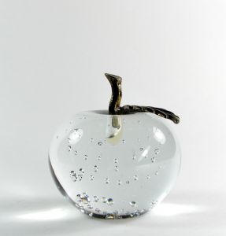
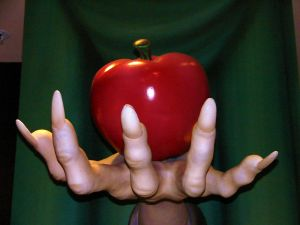

manzanas envenenedas
En 1986 se inauguraban los primeros laboratorios de computadores personales en la escuela de ingeniería de la Universidad de Chile.
En uno de los laboratorios estaban unos atractivos Apple Mac, en el otro una cantidad mayor de PCs.
Por supuesto habían más PCs que Macs, porque esto últimos eran más caros. Pero adivinen cuales eran los equipos que llamaban más la atención.

Sin embargo con el tiempo terminé usando mucho más los PCs que los Macs. La razón principal, era que salvo dibujar, o componer textos con bonitas letras, era muy dificil escribir programas en la Mac. Existía un pascal para el ambiente Mac, pero era bastante limitado. En los PCs aprendí a usar Turbo Pascal, di mis primeros pasos en C. Había más software disponible en las PCs, no eran tan glamorosas como los Macs, pero para un programador nato como yo, la libertad era mucho mayor en esos viejos PCs con DOS que en el Mac.
Nunca he tenido una máquina Apple, y no sé si llegue a tener una, aunque Apple produce el hardware más sexy que existe, y no niego que tengo ganas de hacerme de un iPhone. Por que la parte consumista de mi personalidad se sentiría confortada. Porque hay que reconocer que los productos de Apple son seductores.
Con todo, considero que Jobs es anticuado. En un momento en que todos estamos cambiando de paradigma, donde no sólo queremos consumir, también queremos producir y sobre todo compartir, las estrategias de Jobs apuntan a perpetuar la idea del usuario consumidor.
Jobs es un elitista, no cree en conceptos de cultura libre ni nada de esas cosas. El quiere controlar el contenido. Quiere que todos usemos sus gadgets para controlar mejor el contenido. El software de Apple nunca ha sido libre, y sabemos que la gente de la FSF no es amiga de Apple.
Ya lo he dicho antes, en muchos sentidos es mejor Bill Gates que Steve Jobs. Los que prefieren a Apple sobre Microsoft realmente no tienen idea de tecnología ni de historia, están bajo el influjo del campo distorsionador de realidad de Jobs.
Por eso que me preocupan las noticias de que nuestro gobierno ha firmado un acuerdo con Apple, yo habría esperado una alianza con otra empresa, no con una que sólo quiere aumentar su base de productores.

Sospecho de las iniciativas educativas que pueda desarrollar Apple, realmente. Veo dificil que podamos llegar a correr aplicaciones Sugar en el iPhone, aunque técnicamente es factible, creo que eso no va a suceder por que Apple no quiere abrir su plataforma, sabemos lo hostil que es con los que han tratado de abrir el iPhone y no tiene ninguna intención de cambiar de actitud.
Es peor tener un laboratorio para niños basados en productos Apple que sobre Windows. ¡Al menos hay más gente capacitada para desarrollar en Windows!
Pero, ¿qué más podemos esperar de un gobierno que está perdido en tecnología, lleno de ignorantes en estas materias tomando las decisiones?
No nos vayamos a comer una manzana envenenada.